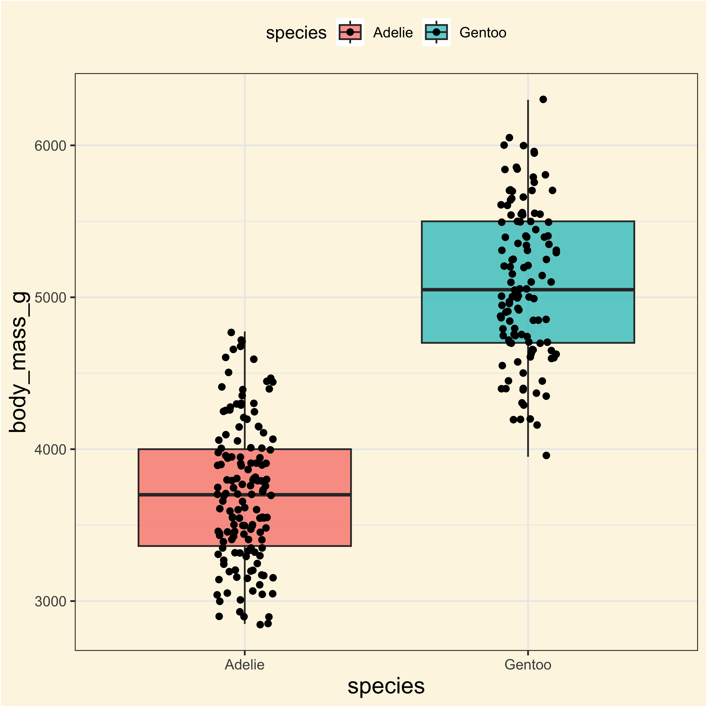
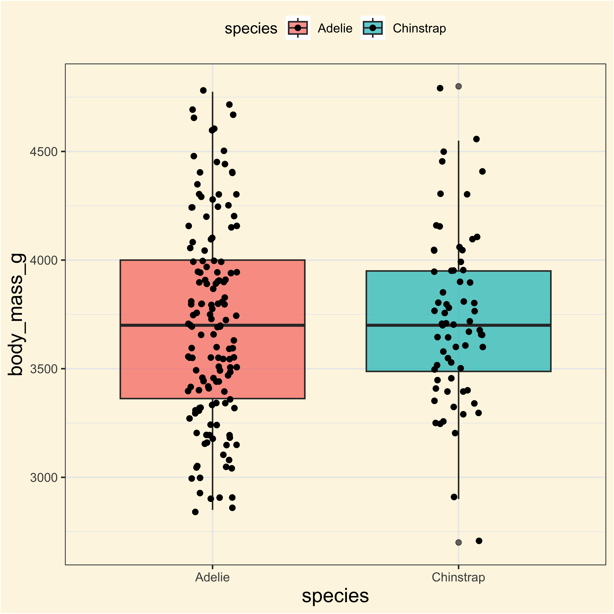
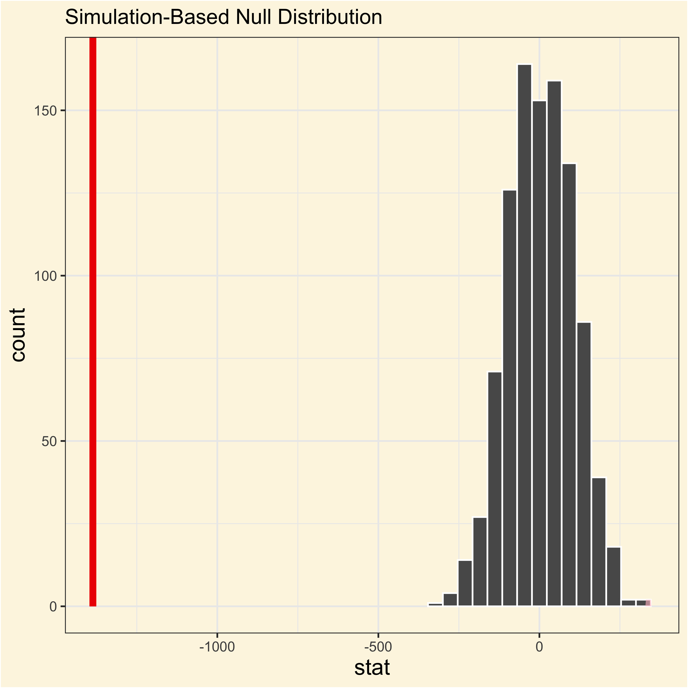
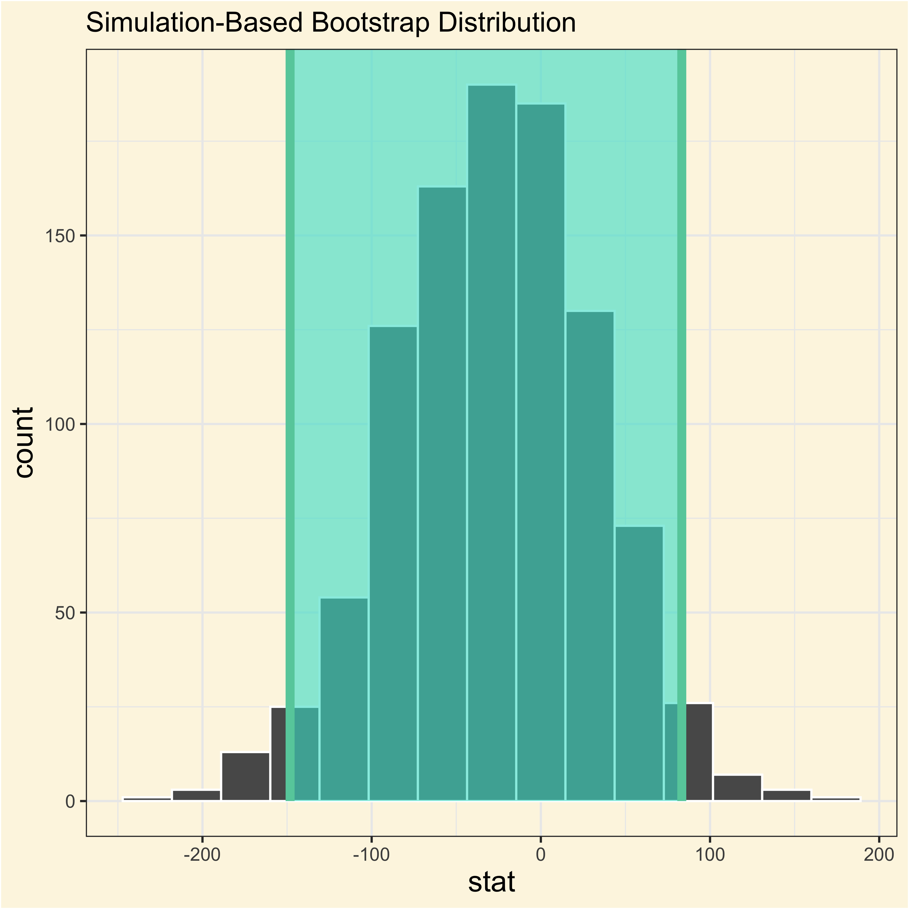
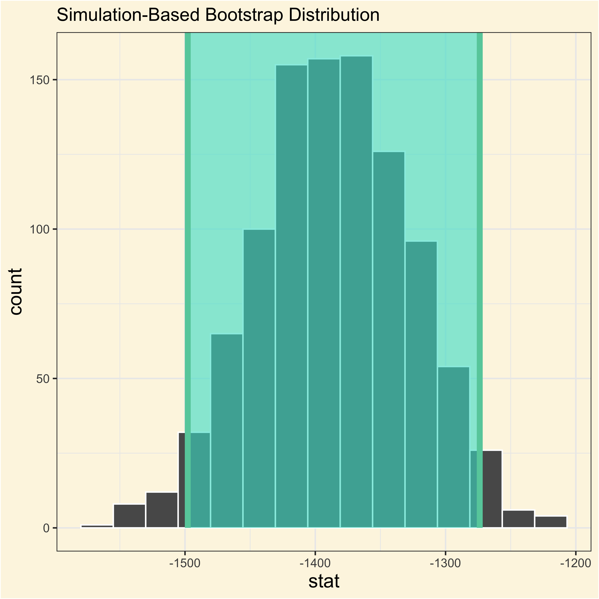

Permutation tests & Bootstrap
https://bit.ly/424cydp
Camilo G.
Alejandra S.
Ronald D.
Why do we re-sampling data?
To simulate the data that would have been collected if the statistical null hypothesis were true!
Permutation tests
Simulate replications of rearrangements of the observations to draw a possible null distribution.
Bootstrap
Randomly re-sample the observations with replacement (allowing duplication) to re-calculate the test statistic of interest.
The infer package
The four infer verbs:
specify()allows you to specify the variable, or relationship between variables, that you’re interested in.hypothesize()allows you to declare the null hypothesis.calculate()a distribution of statistics from the generated data to form the null distribution.generate()data reflecting the null hypothesis (byr permutation or bootstrap).visualize()is a set of custom functions to plot results from the infer package.
Let’s see an example of permutation
Adelie and Gentoo
Adelie and Chinstrap

- Calculate the observed statistic of interest:
adelie_gentoo_observed <- adelie_gentoo |>
specify(body_mass_g ~ species) |>
calculate(
stat = "diff in means",
order = c("Adelie", "Gentoo")
)
adelie_gentoo_observedadelie_chinstrap_observed <- adelie_chinstrap |>
specify(body_mass_g ~ species) |>
calculate(
stat = "diff in means",
order = c("Adelie", "Chinstrap")
)
adelie_chinstrap_observed- Generate the null distribution of the permuted data and the p-values:
adelie_gentoo_null <- adelie_gentoo |>
specify(body_mass_g ~ species) |>
hypothesize(null = "independence") |>
generate(reps = 1000, type = "permute") |>
calculate(
stat = "diff in means",
order = c("Adelie", "Gentoo")
)
adelie_gentoo_null |>
get_p_value(
obs_stat = adelie_gentoo_observed,
direction = "two-sided"
)adelie_chinstrap_null <- adelie_chinstrap |>
specify(body_mass_g ~ species) |>
hypothesize(null = "independence") |>
generate(reps = 1000, type = "permute") |>
calculate(
stat = "diff in means",
order = c("Adelie", "Chinstrap")
)
adelie_chinstrap_null |>
get_p_value(
obs_stat = adelie_chinstrap_observed,
direction = "two-sided"
)- Visualize the observed statistic against the null distribution:
Adelie and Gentoo
Code
visualize(adelie_gentoo_null) +
shade_p_value(
obs_stat = adelie_gentoo_observed,
direction = "two-sided"
)
Adelie and Chinstrap
Code
visualize(adelie_chinstrap_null) +
shade_p_value(
obs_stat = adelie_chinstrap_observed,
direction = "two-sided"
)Let’s see an example of Bootstrap
adelie_chinstrap_bootstrap <- adelie_chinstrap |>
specify(body_mass_g ~ species) |>
generate(reps = 1000, type = "bootstrap") |>
calculate(
stat = "diff in means",
order = c("Adelie", "Chinstrap")
)
ac_ci <- adelie_chinstrap_bootstrap |>
get_confidence_interval(point_estimate = adelie_chinstrap_observed)
ac_ciadelie_gentoo_bootstrap <- adelie_gentoo |>
specify(body_mass_g ~ species) |>
generate(reps = 1000, type = "bootstrap") |>
calculate(
stat = "diff in means",
order = c("Adelie", "Gentoo")
)
ag_ci <- adelie_gentoo_bootstrap |>
get_confidence_interval(point_estimate = adelie_gentoo_observed)
ag_ciAdelie and Chinstrap
Code
adelie_chinstrap_bootstrap |>
visualize() +
shade_confidence_interval(endpoints = ac_ci)
Adelie and Gentoo
Code
adelie_gentoo_bootstrap |>
visualize() +
shade_confidence_interval(endpoints = ag_ci)
It tells us how the averages in body mass between Adelie and Chinstrap penguins change if we redid the experiment many times.
BIOL2205 - IeI - Universidad de los Andes